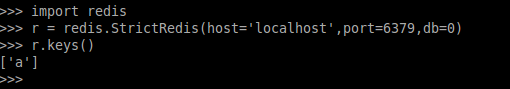
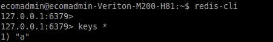
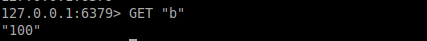

<md-dialog>
	<form>
		<md-toolbar>
			<div class="md-toolbar-tools">
				<h2>get(key)</h2>
				<span flex></span>
				<md-button class="md-icon-button" ng-click="cancel()">
					<md-icon md-svg-src="../static/img/ic_close_24px.svg" aria-label="Close dialog">
					</md-icon>
				</md-button>
			</div>
		</md-toolbar>
		<md-dialog-content style="max-width:800px;max-height:810px; ">
			<md-tabs md-dynamic-height md-border-bottom>
				<md-tab label="DESCRIPTION">
					<md-content class="md-padding">
						<h1 class="md-display-2">DESCRIPTION</h1>
						<p>Using this function we can get value or object(if stored with that key_name) of single key by key_name or key_variable, if there is any key in redis.</p>
						<h3>NOTE:</h3>
						<p>If return data is some kind of object(for ex: dict or json or serialize object etc.) than use <strong><code>pickle</code></strong> to convert that data in byte streamable which also can be done by serializers.</p>
						<p>To explain get()'s working, we have been using these other functions in <strong>IMAGE</strong> tab :</p>
						<ul>
							<li>redis.StrictRedis()</li>
							<li>keys()</li>
							<li>set()</li>
							<li>flushall()</li>
						</ul>
					</md-content>
				</md-tab>
				<md-tab label="CODE">
					<md-content class="md-padding">
						<h1 class="md-display-2">CODE SYNTAX</h1>
						<code>r.get(key_name)</code>
						<ul>
							<li>Here key_name is name of key whose data you want to retrieve from redis.</li>
							<li>r is <strong><code>< redis_instance ></code></strong></li>
						</ul>
					</md-content>
				</md-tab>
				<md-tab label="IMAGE">
					<md-content class="md-padding">
						<h2 class="md-display-2">CODE EXECUTION IMAGE</h2>
						<ol type="1">
						<li>Getting Redis Connection and checking all keys by <strong><code>r.keys()</code></strong>. Here < redis_instance> is <strong>r</strong>.</li>
							
							<li>Start Redis Client by command<strong><code>redis-cli</code></strong> in different termianl and for checking all keys, use command <strong><code>keys *</code></strong></li>
							
							<p> Now you can see in both terminals, output of commands give a key with name "a". It means there is one key in redis.</p>
							<li> Let's remove all keys by function <strong><code>flushall()</code></strong> (in python). For redis-cli use command <strong><code>FLUSHALL</code></strong>.</li>
							
							<p>In redis-cli tab:</p>
							
							<li>Add a new key <strong>'b'</strong> with value <strong>100</strong> by command <strong><code>r.set('b',100)</code></strong></li>
							
							<li>Now we will use <strong><code>get()</code></strong> function. In this case <strong><code>r.get('b')</code></strong>.</li>
							
							<p>In redis-cli tab:</p>
							
							<p> As we can see that we have got our key b's value 100</p>
							</ol>
					</md-content>
				</md-tab>
			</md-tabs>
		</md-dialog-content>

		<!-- <md-dialog-actions layout="row">
		<md-button href="http://en.wikipedia.org/wiki/Mango" target="_blank" md-autofocus>
		More on Wikipedia
		</md-button>
		<span flex></span>
		<md-button ng-click="answer('not useful')" >
		Not Useful
		</md-button>
		<md-button ng-click="answer('useful')" style="margin-right:20px;" >
		Useful
		</md-button>
		</md-dialog-actions> -->
	</form>
</md-dialog>

